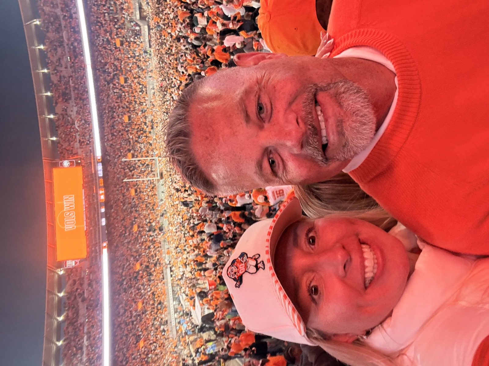
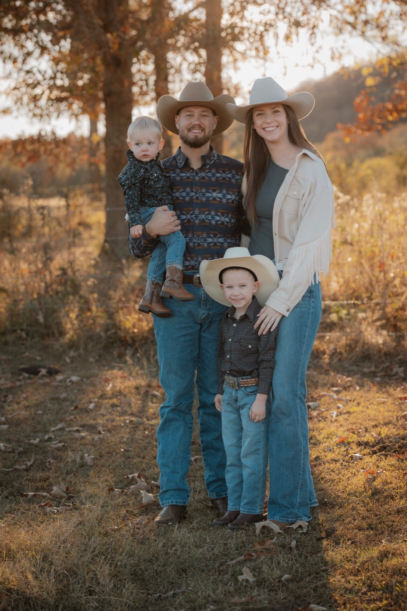
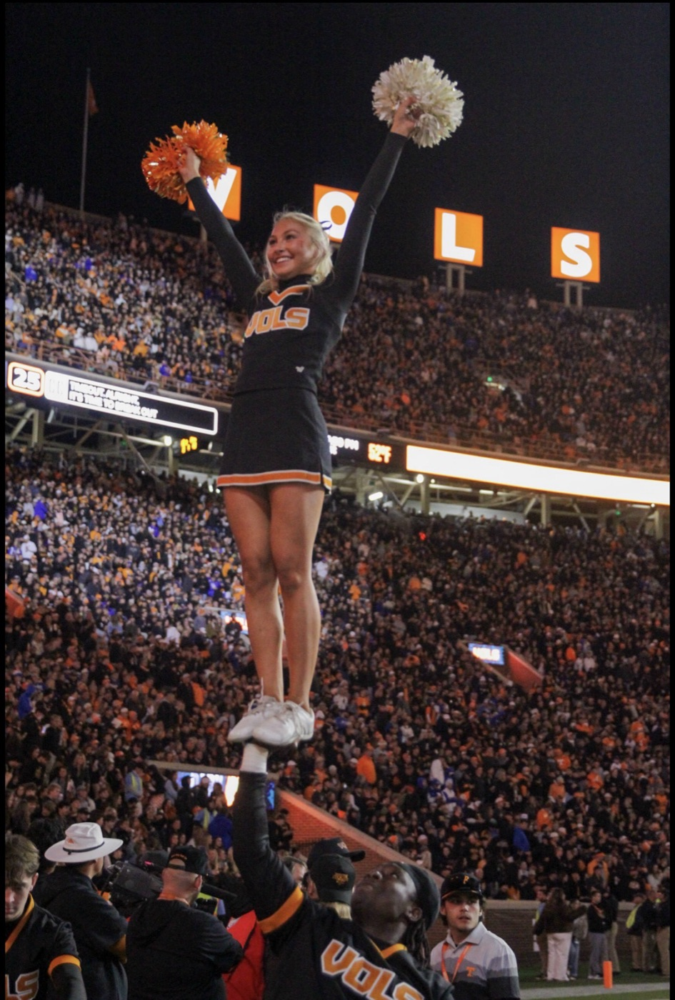

New Ownership. Fresh Energy. Same Great Pour.
For John and Laura Rogers, Pour Taproom Knoxville is about more than great beer — it's about family, community, and creating a place where everyone feels welcome.
John, a proud military veteran, and Laura share a love for bringing people together, supporting local businesses, and making lasting memories. After making Knoxville their home, they quickly fell in love with the energy, traditions, and genuine Southern hospitality that make East Tennessee so special.



Family is at the heart of everything they do. John and Laura are proud parents of two children and grandparents to two wonderful grandsons, Beau and Liam.
They are incredibly proud of their son, Cameron Rogers, who serves his community as a detective in Conway, Arkansas. Cameron is married to their wonderful daughter-in-law, Leah Rogers, and family continues to be one of John and Laura's greatest blessings.
Their daughter, Grace, is a cheerleader at the University of Tennessee, making the Rogers family especially passionate about all things orange and white. Whether cheering on the Vols at Neyland Stadium, celebrating Tennessee traditions, or spending time with their children and grandchildren, family and community are always at the center of their lives.
Laura is also the owner of BidDayz Greek Store & Embroidery, a Knoxville-based business specializing in Greek apparel, custom embroidery, and personalized merchandise. Through BidDayz, she has built strong connections with the University of Tennessee community, local organizations, and fellow small business owners.
When the opportunity came to take ownership of Pour Taproom Knoxville, John and Laura saw more than a business opportunity. They saw a chance to create something special — a welcoming gathering place where locals, visitors, families, and friends can come together to enjoy great drinks, good food, and even better company.
Their vision is simple: honor what makes Pour Taproom special while bringing fresh energy, exciting events, and a personal touch to the experience.
From Tennessee game days and trivia nights to casual afternoons and evenings with friends, John and Laura want Pour Taproom to be a place where everyone feels like part of the family.
As proud Knoxville business owners, they look forward to supporting local breweries, giving back to the community, honoring fellow veterans, and continuing to make Pour Taproom a favorite Old City destination.
For the Rogers family, it's not just about what's on tap — it's about the people gathered around it.
Come as you are. Pour what you love. Stay for the memories.
John & Laura Rogers
Proud Owners | Pour Taproom Knoxville